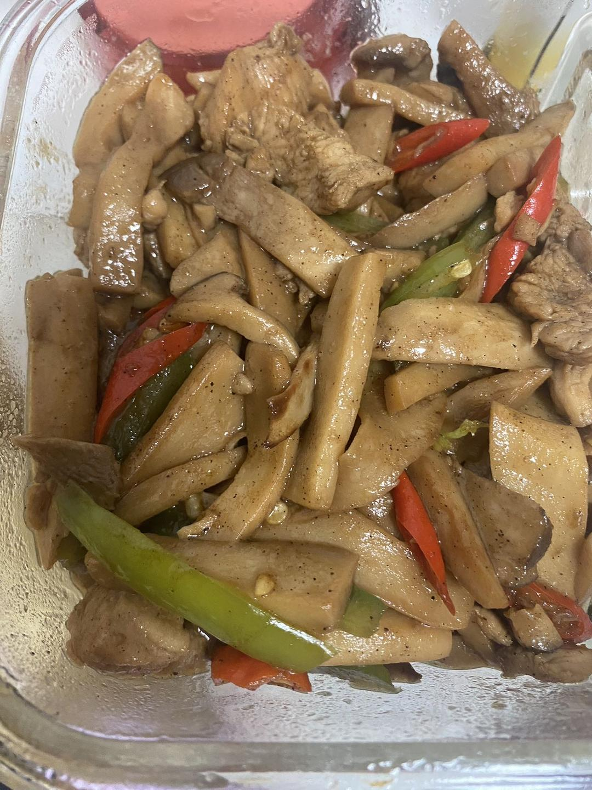
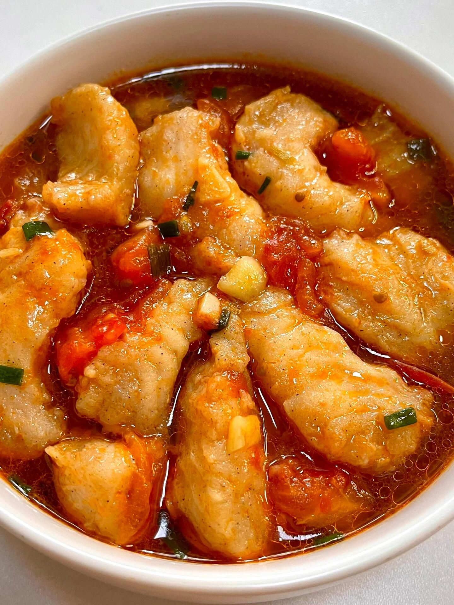
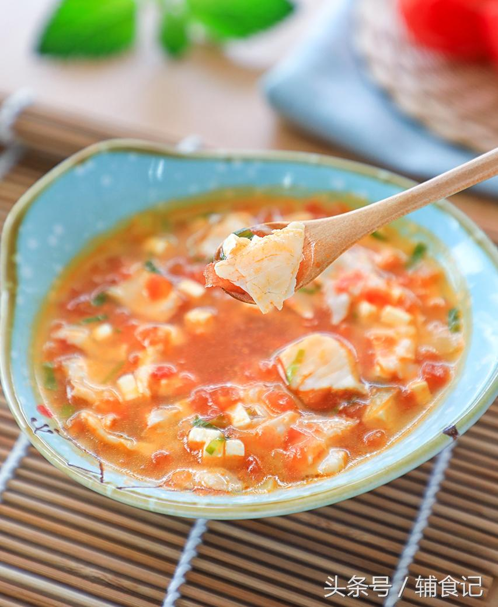
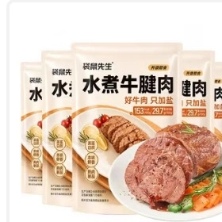
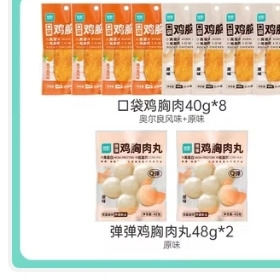
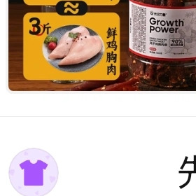
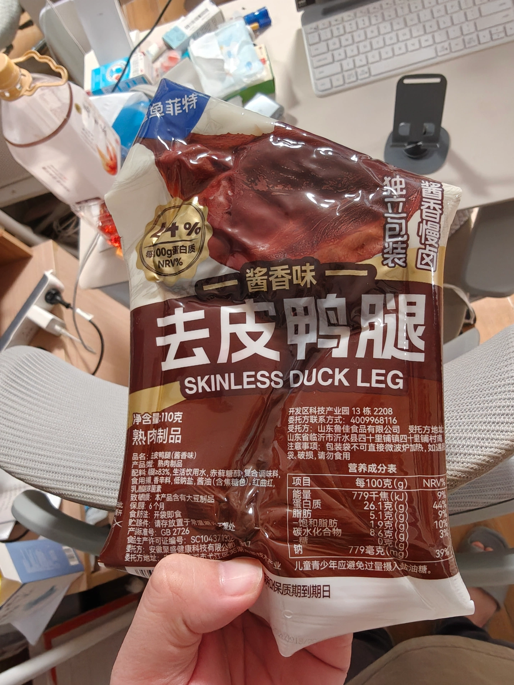
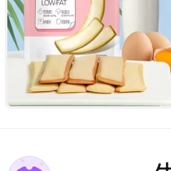

身体变化
9/20 基线 → 10/26体重
81.5 → 78.9 kg
↓ 2.62 kg
体脂率
20.4 → 18.9 %
↓ 1.5 pp
肌肉率
41.2 → 42.1 %
↑ 0.9 pp
蛋白质率
13.6 → 14.4 %
↑ 0.8 pp
BMI
26.0 → 25.1
接近正常上线
基础代谢
1712 → 1697
随体重下降
内脏脂肪
9 → 8
危险等级降档
体脂率
20.4 → 18.9%
减脂有效
营养摄入总览
日均 vs 目标热量
1590
94% · 目标1700
蛋白质
93.5g
67% · 目标140g
碳水
155.7g
104% · 目标150g
脂肪
61.7g
112% · 目标55g
热量控制很稳：32 天里 26 天 落在 1300–1750kcal 区间，日均净摄入约 1298kcal（扣除运动消耗 292kcal）。
蛋白是最大缺口：日均蛋白 93.5g，距 140g 目标差 46g，32 天中仅 1 天 达标——这是下月最该补的功课。
脂肪略超标：日均脂肪 61.7g（目标 55g），主要来自外卖油炸、肥肉与火锅油脂。
蛋白是最大缺口：日均蛋白 93.5g，距 140g 目标差 46g，32 天中仅 1 天 达标——这是下月最该补的功课。
脂肪略超标：日均脂肪 61.7g（目标 55g），主要来自外卖油炸、肥肉与火锅油脂。
饮食习惯画像
从 439 条记录提炼
早餐模式固定：水煮蛋 27 次 + 欧扎克全麦脆 15 次 + 酸奶 20 次，几乎是每日标配，蛋白稳定在 12–14g——建议再加量。
蛋白零食立功：风干鸡胸肉、去皮鸭腿、水煮牛腱等蛋白零食共出现 20+ 次，是正餐之外补蛋白的主力。
蔬菜偏少：除白灼娃娃菜、西葫芦等固定菜外，日均蔬菜约 150–200g，距 300g+ 推荐量有差距。
蛋白零食立功：风干鸡胸肉、去皮鸭腿、水煮牛腱等蛋白零食共出现 20+ 次，是正餐之外补蛋白的主力。
蔬菜偏少：除白灼娃娃菜、西葫芦等固定菜外，日均蔬菜约 150–200g，距 300g+ 推荐量有差距。
食谱优秀排行榜
高蛋白 · 低脂导向
1杏鲍菇焖鸡胸
蛋白密度 14.7g/百千卡
2水浸金枪鱼沙拉
蛋白密度 14.0g/百千卡
3豆芽焖牛肉
蛋白密度 12.5g/百千卡

4番茄巴沙鱼
蛋白密度 11.3g/百千卡

5番茄鲈鱼豆腐汤
蛋白密度 11.5g/百千卡
6鸡腿肉炒白蘑
蛋白密度 10.6g/百千卡
排序口径：每 100 千卡蛋白质含量（蛋白密度）× 1 − 脂肪供能占比 × 0.25。上榜菜品均为自家食谱仓收录，适合长期轮换。
零食排行榜
回购参考 · 12 款在库
1水煮牛腱肉 · 袋鼠先生
蛋白密度 19.4g/百千卡

2即食鸡胸肉(奥尔良) · 优形
蛋白密度 18.1g/百千卡

3风干鸡胸肉干条 · 光合力量
蛋白密度 16.9g/百千卡
4鸡胸肉弹弹丸 · 优形
蛋白密度 16.1g/百千卡

5去皮鸭腿(酱香) · 鲨鱼菲特
蛋白密度 14.0g/百千卡

6低脂鸡蛋干 · 沈师傅
蛋白密度 11.4g/百千卡
排序口径：蛋白密度 + 营养评分加权；得分综合「蛋白高、脂肪低」两大维度，兼顾零食库 5 分制营养分。
外卖排行榜
本月 7 次 · 按蛋白密度外食排行榜
餐厅/馆子 · 按蛋白密度运动月报
手表记录汇总292
日均运动消耗 kcal
9,335
月总消耗 kcal
4,136
日均步数
步数两头高、中间低：国庆假后（10/20–10/24）连续 4 天超 1 万步；10/16、10/26 接近 0，休息日缺口明显。运动消耗稳定在 200–460kcal/日，配合饮食形成了 1298kcal 的日均净摄入缺口。
亮点与待改进
本月亮点
- 体重 -2.6kg、体脂 -1.5pp、内脏脂肪 9→8，减脂主线扎实
- 肌肉率不降反升 +0.9pp，没有掉肌肉
- 热量纪律好，26/32 天落在目标区间
- 蛋白零食习惯跑通，零碎蛋白补给有抓手
- 食谱仓 30+ 道菜，家庭餐高蛋白化初见规模
待改进
- 蛋白缺口大：日均 93.5g，目标 140g，差 46g
- 脂肪超标：外卖油炸 + 火锅 + 肥肉贡献明显
- 晚餐碳水偏高：米饭/粉面频繁，建议晚餐减半换蛋白
- 休息日运动归零，步数波动大
下月行动建议
1
蛋白质拉到 110g 以上（先向 140 靠拢）
午餐/晚餐各加 30–40g 肉蛋鱼（约 1 个手掌大），把外卖日替换为食谱仓高蛋白菜：杏鲍菇焖鸡胸、番茄巴沙鱼、水浸金枪鱼沙拉轮换。
2
脂肪压回 55g 内
火锅/烤串/把子肉类减半频次；外卖优先和府捞面、KFC 帕尼尼这类蛋白密度高的；晚餐肥肉换成瘦肉/白肉。
3
碳水置换：晚餐半碗饭 → 双倍蔬菜
晚间碳水压到 50g 内（约 1 小碗饭），用白灼娃娃菜、西葫芦焖虾仁这类低脂菜填空，让日均碳水回落到 150g 内。
4
休息日也动一动：步数保底 5,000
把 B 站跟练（肩颈/瘦脸/HIIT）固定为每周 3 次，休息日至少完成一次 20 分钟跟练，补上运动空白日。
数据口径说明：本报告基于 energy-tracker 本地 data.json 生成（2026.09.20 起体重秤数据、2026.09.25 起饮食记录）。体重/体脂/肌肉率为小米体重秤与手动录入值；饮食热量为食谱营养计算与包装成分表估算值，外食按菜品分项预估。排行榜按「高蛋白、低脂」导向计算，具体公式见各板块备注。食物来源（外卖/外食）按记录食物特征推断，可能存在个别误判。